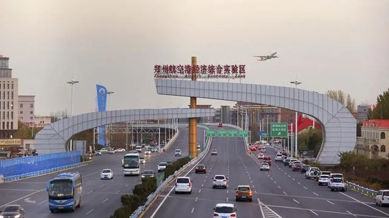

郑州工博会：郑航下半年工作怎么干？走好“枢纽+开放”路
首页 / 郑州工博会：郑航下半年工作怎么干？走好“枢纽+开放”路河南十届十一次全会，为郑州航空港经济综合实验区做好下半年工作指明了方向。

航空港实验区作为“空中丝绸之路”建设的引领，作为全省体制机制创新示范区，承担着贯彻新发展理念、探索先行先试等重要使命，我们将深入学习贯彻会议精神，统筹疫情防控和经济社会发展，抓好“六稳”“六保”，持续深化改革开放，不断推进体制机制创新，切实担负起郑州国家中心城市建设“引领”责任，为全省改革创新探索可复制、可推广的经验。
作为全省对外开放龙头，航空港实验区将坚定不移走好“枢纽+开放”路子。一是紧盯打造国际交通枢纽门户目标，加快推进郑州南站、机场三期等交通节点工程和外联路网建设，积极加密航线网络、加快基地航空公司的培育与引进。二是探索实施更加高效的监管模式和通关体系，持续提升通关便利化水平；加快推进综保区扩区和国际邮件枢纽口岸申报，推动特种商品口岸持续扩大业务规模、拓展覆盖范围，积极培育保税研发、服务外包等新业态和全球信息交流、进口商品展销等新模式，持续提升贸易多元化水平；加快形成口岸、保税、通关、多式联运、物流金融五大体系联动发展的格局，实现开放优势向经济发展优势延展，让郑州南部高质量“动”起来。
在深化改革措施、激发发展活力、优化营商环境方面，航空港实验区将持续深化“一网通办，一次办成”改革，持续抓好流程再造、重点领域改革，实现政务服务“一件事”全流程办理。主动吸取先进做法和经验，不断提升政务服务便捷度，让群众和企业办事更轻松、更高效。
下一阶段，航空港实验区将一以贯之强化招商引资和项目建设。将聚焦新业态、新技术、新模式，紧盯一批符合航空港实验区产业定位、规模大、带动强、前景好的重点项目，专人专班对接，确保签约落地。瞄准全产业链，将继续深挖富士康产业集群“富矿”，推动一批相关产业链公司尽快入区。加快新型基础设施建设，加快建筑业总部集聚，引进更多国际贸易结算中心等项目，持续拓展产业带动能力。常态化开展“三送一强”活动，用好用活相关政策，全力稳住经济基本盘。
航空港实验区将坚持以人民为中心的发展思想，着力保障和改善民生。今年航空港实验区承办省民生实事8项，目前已完成2项、正在实施6项；承办市民生实事19项，目前已完成1项、正在实施18项。将着力破解停车难、停车乱等突出问题，新规划停车场7615个，已建成1388个。将持续巩固提升既有脱贫成果，实现脱贫攻坚与乡村振兴有机衔接。将持续提高系统化、精准化、数字化治理水平，坚决打好蓝天、碧水、净土保卫战，持续改善生态环境总体质量。
文章来源：河南日报